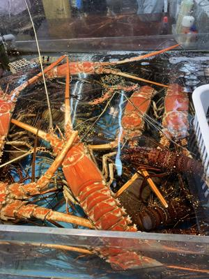

うるがいの話 ある日
最新: 古いノートパソコン【うるがいの話 ある日】とは 一日だけのプログです
『うるがいの話』の最新一日だけのプログで、通信料が少なく経済的だ。カニの画像をクリックすると全ての日付が載る『うるがいの話』サイトを表示します
|
|
【うるがいの話】 うるがい(ｳﾙｶﾞｲ urugai)とは、『もずくがに』の名前でとても大きくなります。 |
|---|---|
|
|
【カミマヤーの話】 猫のことを方言でマヤーといいます。カミマヤー（kamimayaa）とは、神の猫のことです。 |
|
【たながぁの音楽】 たながぁ（ﾀﾅｶﾞｰ tanagaa）とは手長えびのことで、何種類かあり大きいのは車 エビぐらいになります。 |

|
【ぶながぁの話】 ぶながぁ(ﾌﾞﾅｶﾞｰ bunagaa)とは、赤い髪の毛、赤い身体、そして身長は１ｍ２０ｃｍ ぐらい、川の蟹を食べているの目撃された。場所は沖縄県国頭郡大宜味村のと ある村僕の隣近所に住んでいる爺さんから、聞いた話です。 |
|
|
【ギーマの話】 ギーマ(giima)とは、山原の里山に咲くスズランに似た、 花を付けます。実は食べられます、 気が付くと口の周りが紫になっています。 |
2025年02月28日 (金）古いノートパソコン
15:59
マンションを片付けていたら、私の名前がある古いノートパソコン
の一式が出てきた。家に持って電源を入れてみた、・・、電源が入
らない。当たり前か、１９９７年ごろのパソコンだから。とある企
業でリース物件として利用していた端末を、リースが切れ払い下げ
としてメーカーから、一台？万（さすがに覚えていない）で２台買
った。一台は、私の妹に、この一台はヨメの妹に譲ったものだった
。ネットで調べたら、中古パソコン販売で６万で売り出されていた
！、買う人いるのかな？。まったく、利用価値がないと思うが。

古本屋に、マンションから出た本とヨメの本をダメもとで古本屋（
ちはや書房、事前に電話で確認した）持っていった（２０キロほど
）。手間賃だと思うが千円で売れた。
天気がいいのできのう、泊魚市にいった。魚が少ない、初めてであ
る。いつもの５００円のところはまったくなく、別の７５０円もす
るところ（これも最後の一品）から買う。
見たこともないエビが水槽にいた。グーグルで検索したがダメだっ
た。
